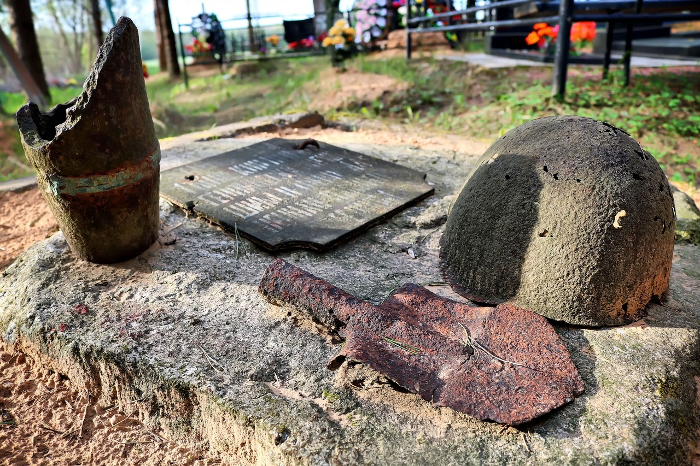
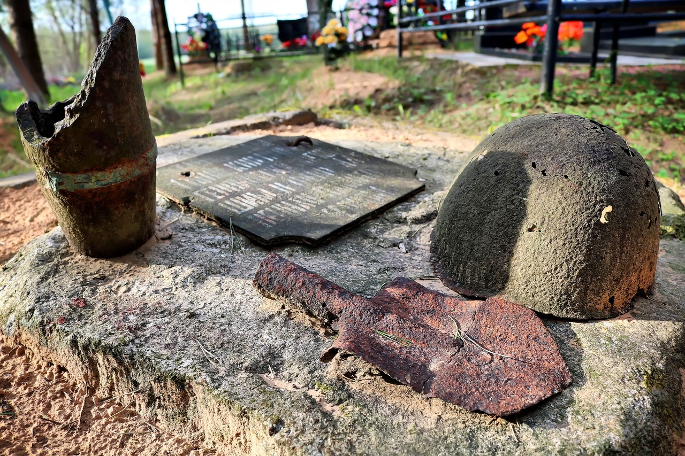
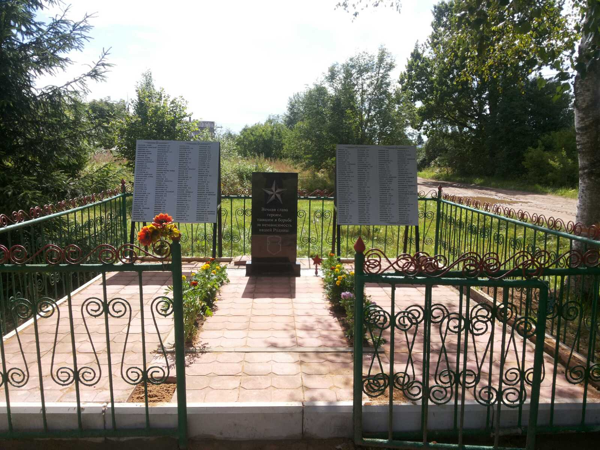
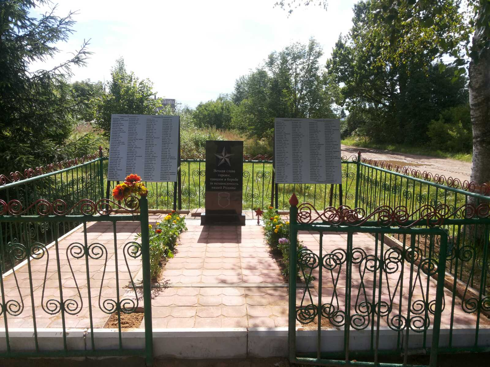
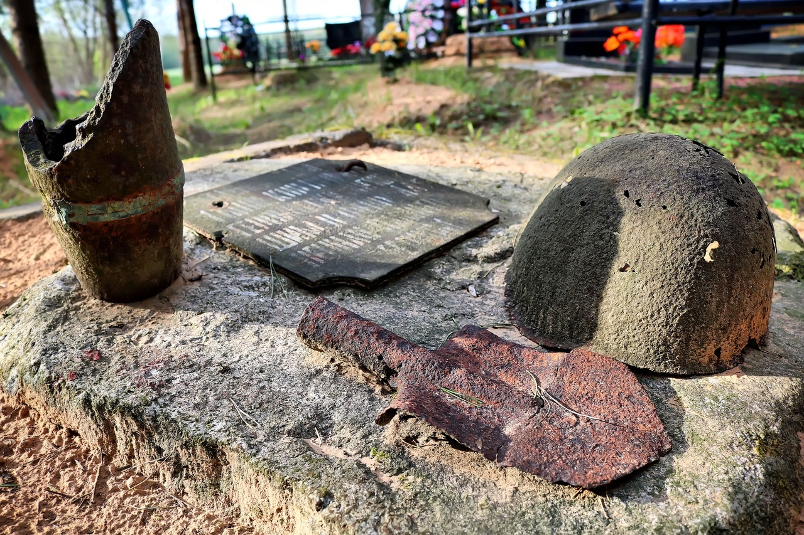
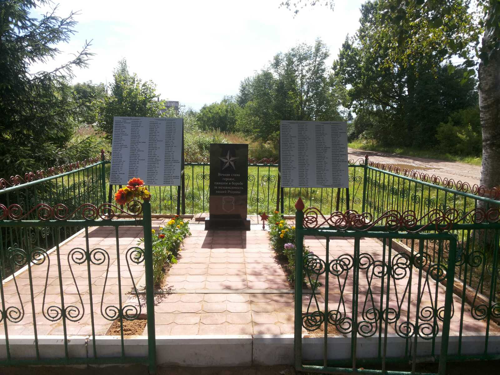

 

Информация № 1: Воинское захоронение
1. Место и дата захоронения: Республика Беларусь, Витебская обл., Витебский район,Зароновский с/с д. Степанково, (урочище Малые Рубины)
2. Тип захоронения: Братская могила
3. Размеры захоронения: Ширина – 2 м, длина – 3 м
4. Краткое описание захоронения:На гражданском кладбище. Могила обложена бетонными плитами, есть обелиск на котором закреплена табличка из бляхи с надписью “Танкистам 1 танк. корпуса 11 гд.армии, героически погибшим …(далее неразборчиво)”Состояние удовлетворительное.
5. Количество захороненных: неизвестно
6. Персональные сведения: нет
7. Дадатковая інфармацыя: В могиле похоронены танкисты. Інфармацыя прадстаўлена Нікіцінай Л.К. К: 55°15’21.5”N 29°57’56.8”E

